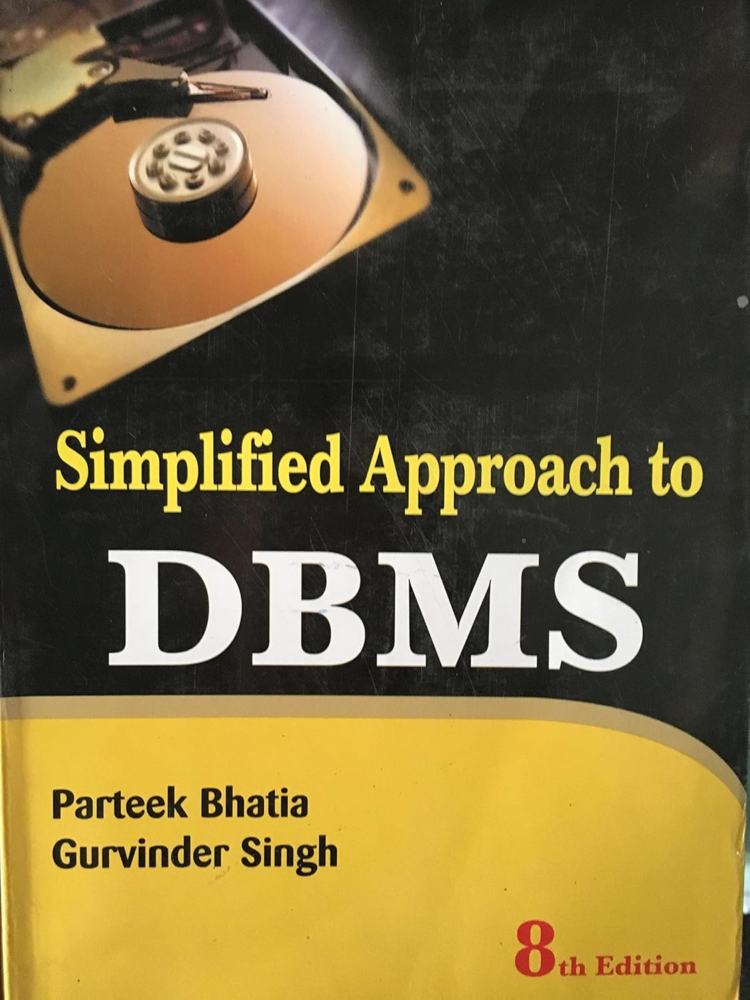

Database Management System is a software or technology used to manage data from a database. Some popular databases are MySQL, Oracle, MongoDB, etc. DBMS provides many operations e.g. creating a database, Storing in the database, updating an existing database, delete from the database. DBMS is a system that enables you to store, modify, and retrieve data in an organized way. It also provides security to the database.
CLICK ON THE BOOK IMAGE & DOWNLOAD DBMS E_BOOK

In this Database Management System tutorial, you’ll learn basic to advanced topics like the ER model, Relational Model, Relation Algebra, Normalization, File Organization, etc.